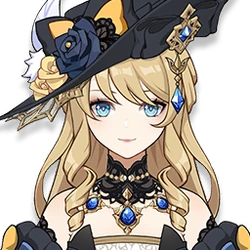

Navia
Element: Geo
Weapon: Claymore
Role: DPS/Support
Navia Caspar is a playable Ousia-aligned Geo character in Genshin Impact. She is the optimistic president of the Spina di Rosula, a mantle previously held by her late father Callas. Her enthusiastic and tenacious spirit allow her to push on with helping the people of Fontaine in spite of the various losses in her life.
As the head of the Spina di Rosula, Navia is devoted to helping people of Fontaine, being likened as a "big sister" who checks in on everyone. She has a sharp mind and knack for investigating, being able to analyze events from different angles and find answers that other parties may miss.[2] Due to the struggles Navia had while growing up, she sometimes struggles to comprehend her own existence and wonders if she did anything meaningful. Despite having lost many loved ones throughout the years, particularly her parents Callas and Clementine, along with her trusted subordinates Melus and Silver, Navia still pushes on for a brighter future, not wanting their sacrifices to be in vain. She had a good relationship with Clorinde in her youth, but following Clorinde killing her father in a duel, their relationship has been strained as she finds it hard to forgive her even after understanding his sacrifice. However, after solving the "young women disappearance case" with the Traveler and Paimon, Navia and Clorinde have started to talk and meet up with each other again to reconcile their relationship. Outside of investigating, Navia enjoys baking, particularly macarons.